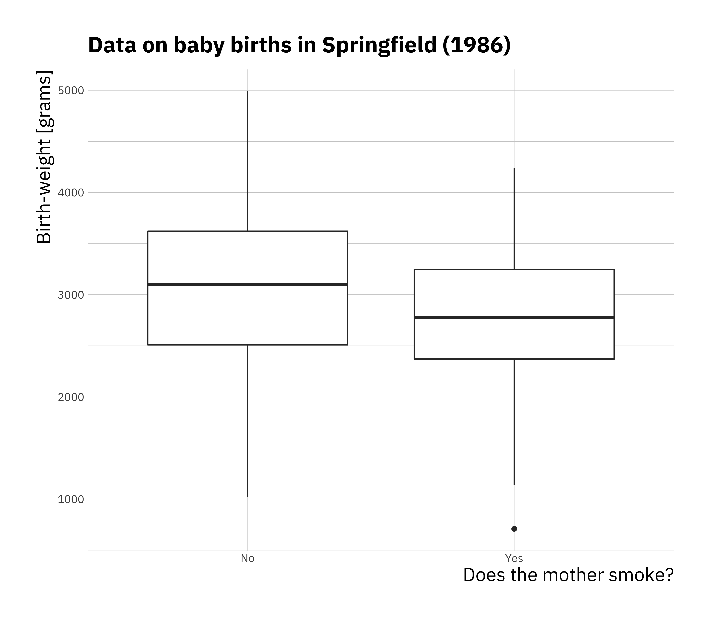

4.2 Categorical covariates
Recall from the lecture that covariates don’t need to be numerical but can also be categorical. We will now explore regression with a categorical variable. Load a new dataset which is included in the MASS package, you won’t be able to load this dataset if package isn’t installed. Load the dataset explore what the data looks like.
## low age lwt race smoke ptl ht ui ftv bwt
## 85 0 19 182 2 0 0 0 1 0 2523
## 86 0 33 155 3 0 0 0 0 3 2551
## 87 0 20 105 1 1 0 0 0 1 2557
## 88 0 21 108 1 1 0 0 1 2 2594
## 89 0 18 107 1 1 0 0 1 0 2600
## 91 0 21 124 3 0 0 0 0 0 2622## low age lwt race
## Min. :0.0000 Min. :14.00 Min. : 80.0 Min. :1.000
## 1st Qu.:0.0000 1st Qu.:19.00 1st Qu.:110.0 1st Qu.:1.000
## Median :0.0000 Median :23.00 Median :121.0 Median :1.000
## Mean :0.3122 Mean :23.24 Mean :129.8 Mean :1.847
## 3rd Qu.:1.0000 3rd Qu.:26.00 3rd Qu.:140.0 3rd Qu.:3.000
## Max. :1.0000 Max. :45.00 Max. :250.0 Max. :3.000
## smoke ptl ht ui
## Min. :0.0000 Min. :0.0000 Min. :0.00000 Min. :0.0000
## 1st Qu.:0.0000 1st Qu.:0.0000 1st Qu.:0.00000 1st Qu.:0.0000
## Median :0.0000 Median :0.0000 Median :0.00000 Median :0.0000
## Mean :0.3915 Mean :0.1958 Mean :0.06349 Mean :0.1481
## 3rd Qu.:1.0000 3rd Qu.:0.0000 3rd Qu.:0.00000 3rd Qu.:0.0000
## Max. :1.0000 Max. :3.0000 Max. :1.00000 Max. :1.0000
## ftv bwt
## Min. :0.0000 Min. : 709
## 1st Qu.:0.0000 1st Qu.:2414
## Median :0.0000 Median :2977
## Mean :0.7937 Mean :2945
## 3rd Qu.:1.0000 3rd Qu.:3487
## Max. :6.0000 Max. :4990We will give the data more interpretable names and generally cleanup the data a little bit.
# rename columns
colnames(birthwt) <- c("bwt_below_2500", "mother_age", "mother_weight", "race",
"mother_smokes", "previous_prem_labor", "hypertension",
"uterine_irr", "physician_visits", "bwt_grams")
birthwt$race <- factor(c("white", "black", "other")[birthwt$race])
birthwt$mother_smokes <- factor(c("No", "Yes")[birthwt$mother_smokes + 1])
birthwt$uterine_irr <- factor(c("No", "Yes")[birthwt$uterine_irr + 1])
birthwt$hypertension <- factor(c("No", "Yes")[birthwt$hypertension + 1])
ggplot(birthwt, aes(x = mother_smokes, y = bwt_grams)) +
geom_boxplot() +
labs(title = "Data on baby births in Springfield (1986)",
x = "Does the mother smoke?",
y = "Birth-weight [grams]")

Now we perform linear regression using the categorical variable, it is no different than performing linear regression on numeric data. The difference is in interpretation.
##
## Call:
## lm(formula = bwt_grams ~ mother_smokes, data = birthwt)
##
## Residuals:
## Min 1Q Median 3Q Max
## -2062.9 -475.9 34.3 545.1 1934.3
##
## Coefficients:
## Estimate Std. Error t value Pr(>|t|)
## (Intercept) 3055.70 66.93 45.653 < 2e-16 ***
## mother_smokesYes -283.78 106.97 -2.653 0.00867 **
## ---
## Signif. codes: 0 '***' 0.001 '**' 0.01 '*' 0.05 '.' 0.1 ' ' 1
##
## Residual standard error: 717.8 on 187 degrees of freedom
## Multiple R-squared: 0.03627, Adjusted R-squared: 0.03112
## F-statistic: 7.038 on 1 and 187 DF, p-value: 0.008667When you put a categorical variable in the formula for lm as in this case bwt_grams ~ mother_smokes where we have two levels in the categorical variable. If we consider this model as \(y = \beta_0 + \beta_1 x + \epsilon\)
The coefficients in the model can be interpreted as follows:
- \(\beta_0\) is average birth weight where the mother was a non smoker
- \(\beta_0 + \beta_1\) is the average birth weight where the mother is a smoker
- \(\beta_1\) is the average difference in birth weight for babies between mother that were smokers and mothers that were non smokers.
Categorical variables can also have more than two levels and in those cases each additional level can be interpreted in the same way.